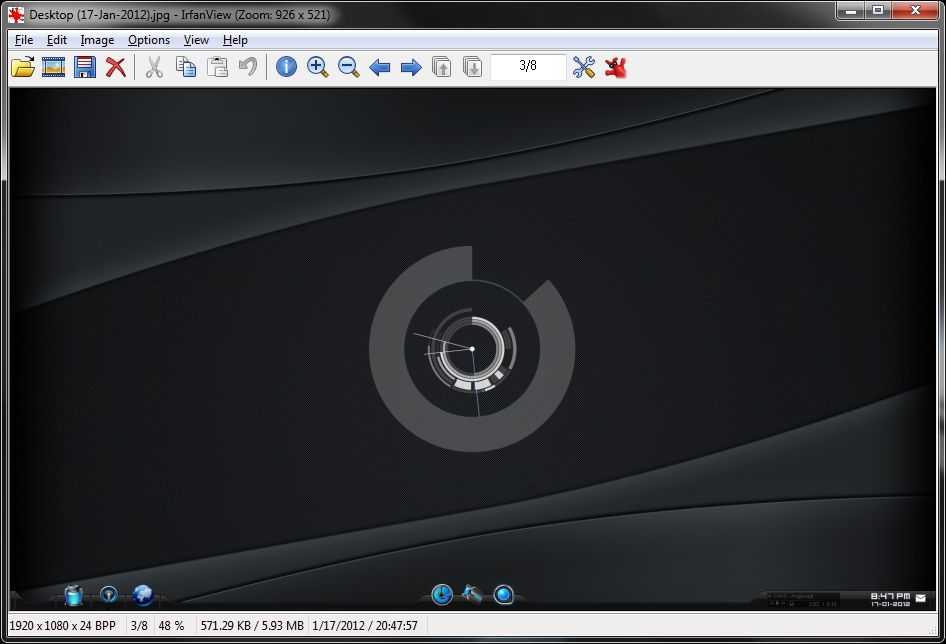
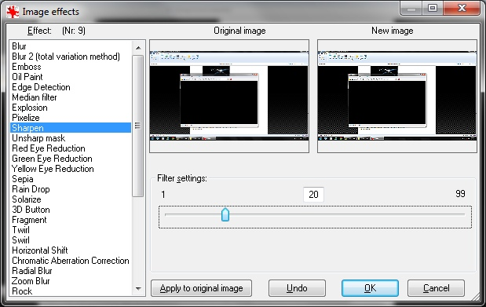
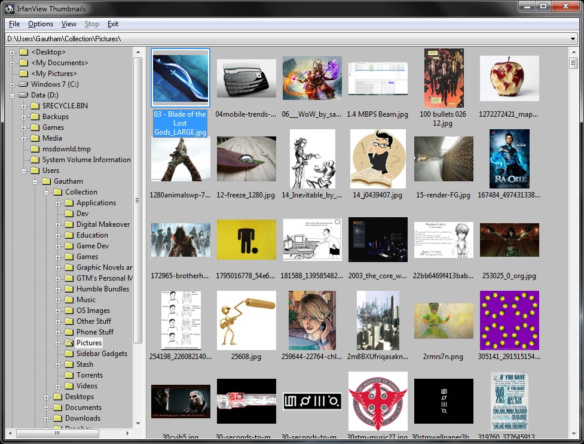

A Tribute to IrfanView
IrfanView is the best daily-use image viewer, period.
OK, maybe not for everyone. But for a power-user, that statement holds true. It’s the best general-purpose image editor I have ever used since a long time (2004), and it managed to keep that title for all these years in the midst of so many new Windows releases. It supports all the Windows versions from the ancient Windows 9.x to Windows 8. It is extremely snappy and unbelievably lightweight, with an install size of just about 2 MB (12 MB if all plugins are installed).
A Heads up: IrfanView looks old-school. It doesn’t conform too well to the latest GUI eye-candy standards (to keep compatibility with older Windows versions, I guess). The window border inherits the Windows theme, but the toolbar has always been pretty basic, with just bitmap skinning. If you’re just out for an image viewer which can browse through folders and do slideshows, then there are much prettier alternatives. I for one love Picasa’s image viewer.
As a Viewer
IrfanView is a very capable image viewer if you’re looking for a no-nonsense experience. It supports everything you would expect in a good image viewer, like browsing through folders, zooming in and out and viewing slideshows. But in addition to that, it also supports a lot of file formats for viewing and saving. Animated GIFs are supported too, and my most favourite: PSD files! You can’t edit PSD files but you can view them just fine.

As an Editor
Let’s be clear on one thing: IrfanView isn’t Photoshop. It doesn’t do layers or layer effects, it has very limited support for transparency when editing images and it doesn’t have brushes, a Pen tool or a Clone tool. But for everything else, there’s nothing better. You can:
- Crop and auto-crop images
- Resize/resample images, set their DPI
- Do basic drawing (hit F12 and you’ll see)
- Change the color depth
- Cut/Copy/Paste rectangular parts of images using the selection tool with pixel-precision
- Add text and watermarks
- Create Panorama images (no intelligent stitching though)
- Capture the screen (full screen/client area, include/exclude mouse cursor, open in editor/save to file, custom hotkey, timed auto-save)
- Apply effects (Sharpen, Blur, Zoom Blur, Radial Blur, Noise, Pixelize, Explosion, etc.)
- Do color corrections (RGB, Brightness, Contrast, Gamma, Saturation)
- Switch RGB channels
- Save to many output formats and control their settings
- And God bless Irfan Skiljan, Batch Conversion with a bunch of options!

Those are just the features that I use and like. It’s also capable of some other crazy stuff like creating standalone slideshows, making screensavers from those slideshows with an option of attaching mp3 files, extract icons from EXEs and DLLs, and much more.
It also comes with a Thumbnails application which is used to browse the supported file formats as thumbnails (I never use it though).

A few tips
If you’re convinced to give IrfanView a shot, head over to the website. I suggest that you download the the plugins pack too, especially if you’re a power user. You never know when you might need them. With the plugins installed, the install size is only about 12 MB.
After you install it, be sure to go through the settings. You’ll want to tweak some of them to make IView your own. By the way, did you know IrfanView was also designed to be used as a very comprehensive command-line tool? I’ll say it again. IrfanView is the best daily-use image viewer out there!
Peace!